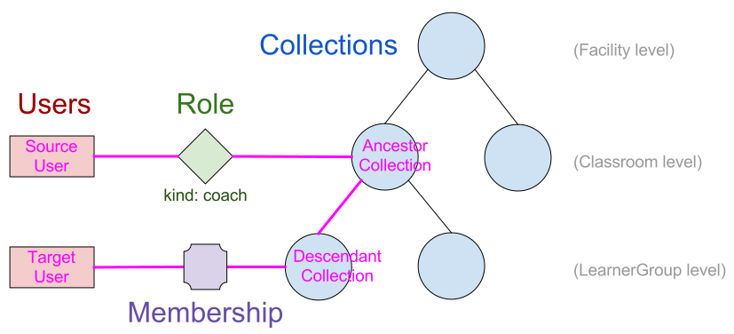

Implementation Details¶
Collections¶
A Collection is implemented as a Django model that inherits from
django-mptt’s MPTTModel, which
allows for efficient traversal and querying of the collection hierarchy. For
convenience, the specific types of collections – Facility, Classroom,
and LearnerGroup – are implemented as _proxy models of the main
Collection model. There is a kind field on Collection that allows
us to distinguish between these types, and the ModelManager for the proxy
models returns only instances of the matching kind.
From a Collection instance, you can traverse upwards in the tree with the
parent field, and downwards via the children field (which is a reverse
RelatedManager for the parent field):
>>> my_classroom.parent
<Collection: "Facility X" (facility)>
>>> my_facility.children.all()
[<Collection: "Class A" (classroom)>, <Collection: "Class B" (classroom)>]
Note that the above methods (which are provided by MPTTModel) return
generic Collection instances, rather than specific proxy model instances.
To retrieve parents and children as appropriate proxy models, use the helper
methods provided on the proxy models, e.g.:
>>> my_classroom.get_facility()
<Facility: Facility X>
>>> my_facility.get_classrooms()
[<Classroom: Class A>, <Classroom: Class B>]
Facility and FacilityDataset¶
The Facility model (a proxy model for Collection, as described above)
is special in that it has no parent; it is the root of a tree. A
Facility model instance, and all other Facility Data associated with the
Facility and its FacilityUsers, inherits from
AbstractFacilityDataModel, which has a dataset field that foreign keys
onto a common FacilityDataset instance. This makes it easy to check, for
purposes of permissions or filtering data for synchronization, which instances
are part of a particular Facility Dataset. The dataset field is
automatically set during the save method, by calling the infer_dataset
method, which must be overridden in every subclass of
AbstractFacilityDataModel to return the dataset to associate with that
instance.
Efficient Hierarchy Calculations¶
In order to make decisions about whether a user has a certain permission for an object, we need an efficient way to retrieve the set of roles the user has in relation to that object. This involves traversing the Role table, Collection hierarchy, and possibly the Membership table, but we can delegate most of the work to the database engine (and leverage efficient hierarchy lookups afforded by MPTT). The following algorithms and explanations will refer to the naming in the following diagram:
In pseudocode, the query for “What Roles does Source User have in relation to Target User?” would be implemented in the following way:
Fetch all Roles with:
User: Source User
Collection: Ancestor Collection
For which there is a Membership with:
User: Target User
Collection: Descendant Collection
And where:
Ancestor Collection is an ancestor of (or equal to) Descendant Collection
At the database level, this can be written in the following way, as a single multi-table SQL query:
SELECT DISTINCT
source_role.kind
FROM
collection_table AS ancestor_coll,
collection_table AS descendant_coll,
role_table,
membership_table
WHERE
role_table.user_id = {source_user_id} AND
role_table.collection_id = ancestor_coll.id AND
membership_table.user_id = {target_user_id}
membership_table.collection_id = descendant_coll.id AND
descendant_coll.lft BETWEEN ancestor_coll.lft AND ancestor_coll.rght AND
descendant_coll.tree_id = ancestor_coll.tree_id;
Similarly, performing a queryset filter like “give me all ContentLogs
associated with FacilityUsers for which Source User has an admin role” can
be written as:
SELECT
contentlog_table.*
FROM
contentlog_table
WHERE EXISTS
(SELECT
*
FROM
collection_table AS ancestor_coll,
collection_table AS descendant_coll,
role_table,
membership_table
WHERE
role_table.user_id = {source_user_id} AND
role_table.collection_id = ancestor_coll.id AND
membership_table.user_id = contentlog_table.user_id
membership_table.collection_id = descendant_coll.id AND
descendant_coll.lft BETWEEN ancestor_coll.lft AND ancestor_coll.rght AND
descendant_coll.tree_id = ancestor_coll.tree_id
)
Note the membership_table.user_id = contentlog_table.user_id condition,
which links the role-membership-collection hierarchy subquery into the main
query. We refer to this condition as the “anchor”.
To facilitate making queries that leverage the role-membership-collection
hierarchy, without needing to write custom SQL each time, we have implemented
a HierarchyRelationsFilter helper class. The class is instantiated by
passing in a queryset, and then exposes a filter_by_hierarchy method that
allows various parts of the role-membership-collection hierarchy to be
constrained, and anchored back into the queryset’s main table. It then returns
a filtered queryset (with appropriate conditions applied) upon which further
filters or other queryset operations can be applied.
The signature for filter_by_hierarchy is:
def filter_by_hierarchy(self,
source_user=None,
role_kind=None,
ancestor_collection=None,
descendant_collection=None,
target_user=None):
With the exception of role_kind (which is either a string or list of
strings, of role kinds), these parameters accept either:
- A model instance (either a
FacilityUseror aCollectionsubclass, as appropriate) or its ID - An F expression that anchors some part of the hierarchy back into the
base queryset model (the simplest usage is just to put the name of a field
from the base model in the
Ffunction, but you can also indirectly reference fields of related models, e.g.F("collection__parent"))
For example, the ContentLog query described above (“give me all
ContentLogs associated with FacilityUsers for which Source User has an
admin role”) can be implemented as:
contentlogs = HierarchyRelationsFilter(ContentLog.objects.all()).filter_by_hierarchy(
source_user=my_source_user, # specify the specific user to be the source user
role_kind=role_kinds.ADMIN, # make sure the Role is an admin role
target_user=F("user"), # anchor the target user to the "user" field of the ContentLog model
)
Managing Roles and Memberships¶
User and Collection models have various helper methods for retrieving and
modifying roles and memberships:
- To get all the members of a collection (including those of its descendant
collections), use
Collection.get_members(). - To add or remove roles/memberships, use the
add_role,remove_role,add_member, andremove_membermethods ofCollection(or the additional convenience methods, such asadd_admin, that exist on the proxy models). - To check whether a user is a member of a
Collection, useKolibriAbstractBaseUser.is_member_of(forDeviceOwner, this always returnsFalse) - To check whether a user has a particular kind of role for a collection or
another user, use the
has_role_for_collectionandhas_role_for_usermethods ofKolibriAbstractBaseUser. - To list all role kinds a user has for a collection or another user, use the
get_roles_for_collectionandget_roles_for_usermethods ofKolibriAbstractBaseUser.
Encoding Permission Rules¶
We need to associate a particular set of rules with each model, to specify the permissions that users should have in relation to instances of that model. While not all models have the same rules, there are some broad categories of models that do share the same rules (e.g. ContentInteractionLog, ContentSummaryLog, and UserSessionLog – collectively, “User Log Data”). Hence, it is useful to encapsulate a permissions “class” that can be reused across models, and extended (through inheritance) if slightly different behavior is needed. These classes of permissions are defined as Python classes that inherit from kolibri.auth.permissions.base.BasePermissions, which defines the following overridable methods:
- The following four Boolean (True/False) permission checks, corresponding to
the “CRUD” operations:
-
user_can_create_object-user_can_read_object-user_can_update_object-user_can_delete_object - The queryset-filtering
readable_by_user_filtermethod, which takes in a queryset and returns a queryset filtered down to just objects that should be readable by the user.
Associating Permissions with Models¶
A model is associated with a particular permissions class through a
“permissions” attribute defined on the top level of the model class,
referencing an instance of a Permissions class (a class that subclasses
BasePermissions). For example, to specify that a model
ContentSummaryLog should draw its permissions rules from the
UserLogPermissions class, modify the model definition as follows:
class ContentSummaryLog(models.Model):
permissions = UserLogPermissions()
<remainder of model definition>
Specifying Role-Based Permissions¶
Defining a custom Permissions class and overriding its methods allows for
arbitrary logic to be used in defining the rules governing the permissions,
but many cases can be covered by more constrained rule specifications. In
particular, the rules for many models can be specified in terms of the role-
based permissions system described above. A built-in subclass of
BasePermissions, called RoleBasedPermissions, makes this easy.
Creating an instance of RoleBasedPermissions involves passing in the
following parameters:
- Tuples of role kinds that should be granted each of the CRUD permissions,
encoded in the following parameters:
can_be_created_by,can_be_read_by,can_be_updated_by,can_be_deleted_by. - The
target_fieldparameter that determines the “target” object for the role-checking; this should be the name of a field on the model that foreign keys either onto aFacilityUseror aCollection. If the model we’re checking permissions for is itself the target, thentarget_fieldmay be".".
An example, showing that read permissions should be granted to a coach or admin for the user referred to by the model’s “user” field. Similarly, write permissions should only be available to an admin for the user:
class UserLog(models.Model):
permissions = RoleBasedPermissions(
target_field="user",
can_be_created_by=(role_kinds.ADMIN,),
can_be_read_by=(role_kinds.COACH, role_kinds.ADMIN),
can_be_updated_by=(role_kinds.ADMIN,),
can_be_deleted_by=(role_kinds.ADMIN,),
)
<remainder of model definition>
Built-in Permissions Classes¶
Some common rules are encapsulated by the permissions classes in
kolibri.auth.permissions.general. These include:
IsOwn: only allows access to the object if the object belongs to the requesting user (in other words, if the object has a specific field,field_name, that foreign keys onto the user)IsFromSameFacility: only allows access to object if user is associated with the same facility as the objectIsSelf: only allows access to the object if the object is the user
A general pattern with these provided classes is to allow an argument called
read_only, which means that rather than allowing both write (create,
update, delete) and read permissions, they will only grant read permission.
So, for example, IsFromSameFacility(read_only=True) will allow any user
from the same facility to read the model, but not to write to it, whereas
IsFromSameFacility(read_only=False) or IsFromSameFacility() would
allow both.
Combining Permissions Classes¶
In many cases, it may be necessary to combine multiple permission classes
together to define the ruleset that you want. This can be done using the
Boolean operators | (OR) and & (AND). So, for example,
IsOwn(field_name="user") | IsSelf() would allow access to the model if
either the model has a foreign key named “user” that points to the user, or
the model is itself the user model. Combining two permission classes with
&, on the other hand, means both classes must return True for a
permission to be granted. Note that permissions classes combined in this way
still support the readable_by_user_filter method, returning a queryset
that is either the union (for |) or intersection (&) of the querysets
that were returned by each of the permissions classes.
Checking Permissions¶
Checking whether a user has permission to perform a CRUD operation on an
object involves calling the appropriate methods on the
KolibriAbstractBaseUser (FacilityUser or DeviceOwner) instance.
For instance, to check whether request.user has delete permission for
ContentSummaryLog instance log_obj, you could do:
if request.user.can_delete(log_obj):
log_obj.delete()
Checking whether a user can create an object is slightly different, as you may
not yet have an instance of the model. Instead, pass in the model class and a
dict of the data that you want to create it with:
data = {"user": request.user, "content_id": "qq123"}
if request.user.can_create(ContentSummaryLog, data):
ContentSummaryLog.objects.create(**data)
To efficiently filter a queryset so that it only includes records that the
user should have permission to read (to make sure you’re not sending them data
they shouldn’t be able to access), use the filter_readable method:
all_results = ContentSummaryLog.objects.filter(content_id="qq123")
permitted_results = request.user.filter_readable(all_results)
Note that for the DeviceOwner model, these methods will simply return
True (or unfiltered querysets), as device owners are considered
superusers. For the FacilityUser model, they defer to the permissions
encoded in the permission object on the model class.
Using Kolibri Permissions with Django REST Framework¶
There are two classes that make it simple to leverage the permissions system
described above within a Django REST Framework ViewSet, to restrict
permissions appropriately on API endpoints, based on the currently logged-in
user.
KolibriAuthPermissions is a subclass of
rest_framework.permissions.BasePermission that defers to our
KolibriAbstractBaseUser permissions interface methods for determining
which object-level permissions to grant to the current user:
- Permissions for ‘POST’ are based on
request.user.can_create - Permissions for ‘GET’, ‘OPTIONS’ and ‘HEAD’ are based on
request.user.can_read(Note that addingKolibriAuthPermissionsonly checks object-level permissions, and does not filter queries made against a list view; seeKolibriAuthPermissionsFilterbelow) - Permissions for ‘PUT’ and ‘PATCH’ are based on
request.user.can_update - Permissions for ‘DELETE’ are based on
request.user.can_delete
KolibriAuthPermissions is a subclass of
rest_framework.filters.BaseFilterBackend that filters list views to include
only records for which the current user has read permissions. This only applies to
‘GET’ requests.
For example, to use the Kolibri permissions system to restrict permissions for an
API endpoint providing access to a ContentLog model, you would do the following:
from kolibri.auth.api import KolibriAuthPermissions, KolibriAuthPermissionsFilter
class FacilityViewSet(viewsets.ModelViewSet):
permission_classes = (KolibriAuthPermissions,)
filter_backends = (KolibriAuthPermissionsFilter,)
queryset = ContentLog.objects.all()
serializer_class = ContentLogSerializer